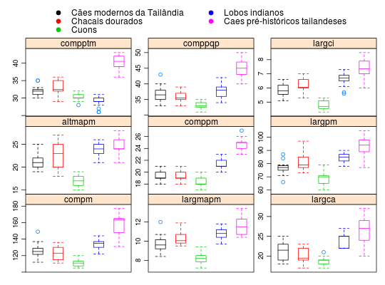

Estudo em ancestrais de cães da Tailândia, através de medições da mandíbula.
Um data.frame com 5 grupo caninos e 10 variáveis.
grupcompmlargmapmlargcaaltmapmcomppmlargpmcompptmcomppqplargcisexoMANLY (2005), pág. 67 à 69.
Veja também ManlyTb1.4.
data(ManlyTb4.5)#> Warning: data set ‘ManlyTb4.5’ not foundstr(ManlyTb4.5)#> 'data.frame': 77 obs. of 11 variables: #> $ grup : Factor w/ 5 levels "Caes modernos da Tailandia",..: 1 1 1 1 1 1 1 1 1 1 ... #> $ compm : int 123 137 121 130 149 125 126 125 121 122 ... #> $ largmapm: num 10.1 9.6 10.2 10.7 12 9.5 9.1 9.7 9.6 8.9 ... #> $ largca : int 23 19 18 24 25 23 20 19 22 20 ... #> $ altmapm : int 23 22 21 22 25 20 22 19 20 20 ... #> $ comppm : int 19 19 21 20 21 20 19 19 18 19 ... #> $ largpm : int 78 78 79 79 84 78 75 75 76 76 ... #> $ compptm : int 32 32 35 32 35 33 32 32 31 31 ... #> $ comppqp : int 33 40 38 37 43 37 35 37 35 35 ... #> $ largci : num 5.6 5.8 6.2 5.9 6.6 6.3 5.5 6.2 5.3 5.7 ... #> $ sexo : int 1 1 1 1 1 1 1 1 2 2 ...library(lattice) library(reshape2) ManlyTb4.5long <- melt(ManlyTb4.5[,-11], id.vars = "grup") i <- c(1, 2, 3, 4, 6) bwplot(value ~ grup | variable, data = ManlyTb4.5long, scales = c(list(relation = "free"), list(x = list(draw = FALSE))), ylab = "", pch = "|", par.settings = list(box.umbrella = list(col = i), box.dot = list(col = i), box.rectangle = list(col = i)), key = list(points = list(col = i, pch = 19), space = "top", columns = 2, text = list(c("Cães modernos da Tailândia", "Chacais dourados", "Cuons", "Lobos indianos", "Caes pré-históricos tailandeses"))))